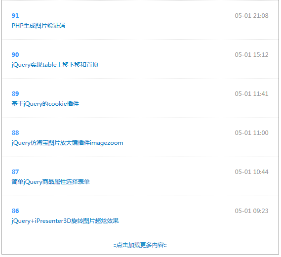

jQuery+php+Ajax实现的一个简单实用的文章列表点击加载更多功能，点击加载更多按钮，文章列表加载更多数据，加载中有loading动画效果。

js部分：
1 <script type="text/javascript" src="jquery.more.js"></script>
2 <script type="text/javascript">
3 $(function() {
4 $('#more').more({'address': 'data.php'})
5 });
6 </script>调用方式：
1 <a href="javascript:;" class="get_more">::点击加载更多内容::</a>